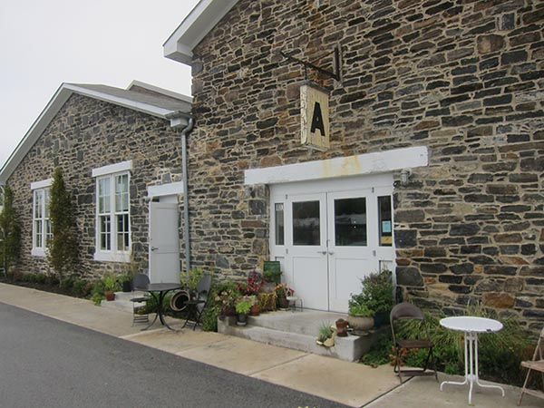
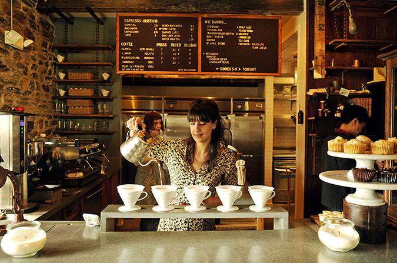

Artifact Coffee
  1500 Union Ave, Baltimore, MD 21211 (410) 235-1881Just founded in 2012, the Counter Culture Coffee selection, farm-to-table menu, and Friday morning coffee tastings have already put Artifact on the map. In fact, USA Today and The Daily Meal have both already named it one of the best coffee shops in America.